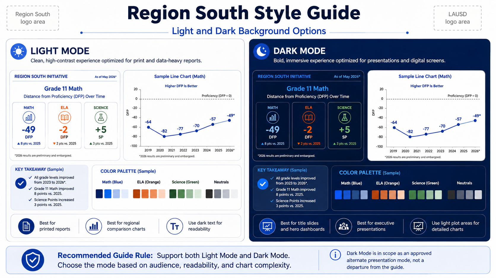
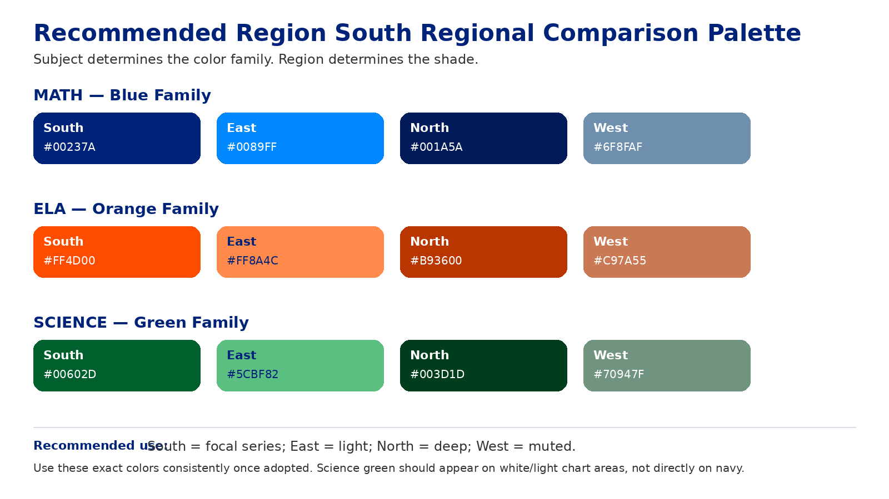
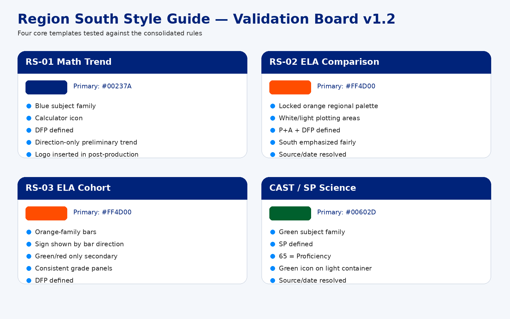

A consistent visual system for Region South presentations, dashboards, data stories, and AI-generated graphics.
The Region South visual system is a presentation and communication framework designed to make instructional and data communications consistent, recognizable, student-centered, and aligned with LAUSD branding.
Canonical Region South logo:https://github.com/marioapodaca/region-south-hub/blob/main/RS-logo.png
Canonical LAUSD seal:https://github.com/marioapodaca/region-south-hub/blob/main/LAUSD_seal.png

Best for print, dense charts, regional comparisons, and maximum color contrast.
Best for presentations, executive dashboards, hero graphics, and student photography.

Primary typeface: Poppins.
| Use | Weight |
|---|---|
| Major title | Bold / ExtraBold |
| Section heading | Bold |
| Subtitle | Medium |
| Chart title | SemiBold |
| Large metric | Bold / ExtraBold |
| Body | Regular |
| Chart labels | Medium |
| Footer/source | Regular |
Digital body alternative: Open Sans. Fallback: Arial.
Use authentic, age-appropriate, diverse students actively engaged in learning. Students are not decorative props.
Reading, annotating, discussing text, writing in response to reading.
Icon: open book, LAUSD Orange.
Solving equations, calculator use, graphing, collaborative problem-solving.
Icon: calculator, LAUSD Navy.
Experiments, measuring liquids, recording observations, discussing results.
Icon: beaker, flask, or microscope, LAUSD Green.
Photo | Main Data | Key Takeaway
Use for SBA trends, CAST, attendance, and single-subject dashboards.
P+A | DFP or SP | Region South Story
Use light plotting areas by default.
Multiple Grade Panels + Student Image + Key Takeaway
Keep cross-panel axes consistent.
| Preferred | Short form | Rule |
|---|---|---|
| Proficient + Advanced | P+A | Do not display PoA in Region South-facing graphics. |
| Distance from Proficiency | DFP | Higher is better; 0 is proficiency. |
| Science Points | SP | Range 0–100; 65 is proficiency. |
Use accurate scales, direct labels where useful, minimal clutter, and fair comparison.
If either is missing, prompt the user. Always offer the option to omit the item if it is not pertinent. Never invent a source or date.
Do not show restricted values or inferable endpoints. Use a direction-only or separate Preliminary Trend treatment.

A graphic becomes an Approved Example only after post-production review.